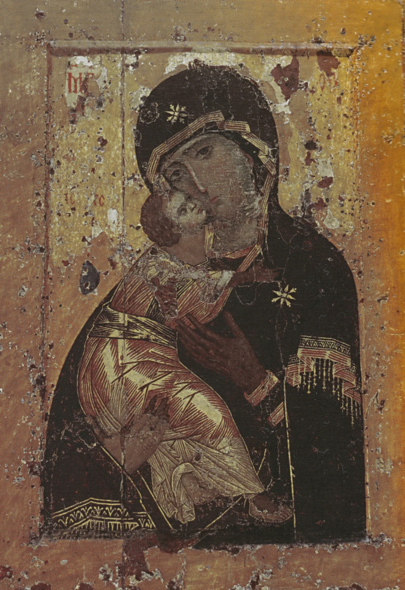
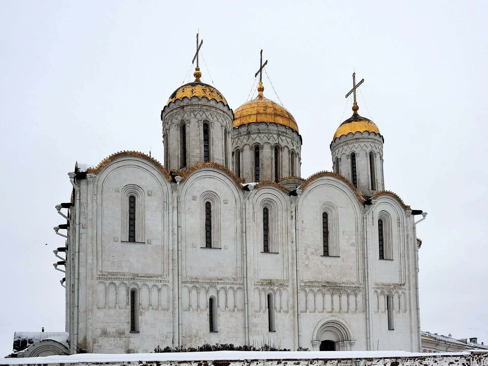
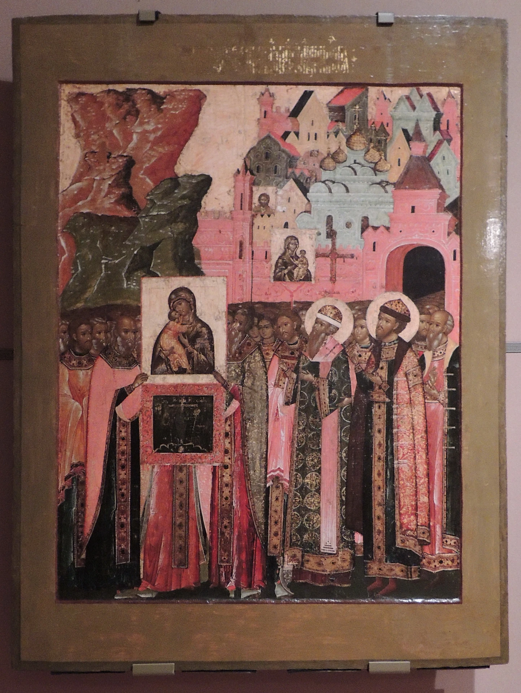
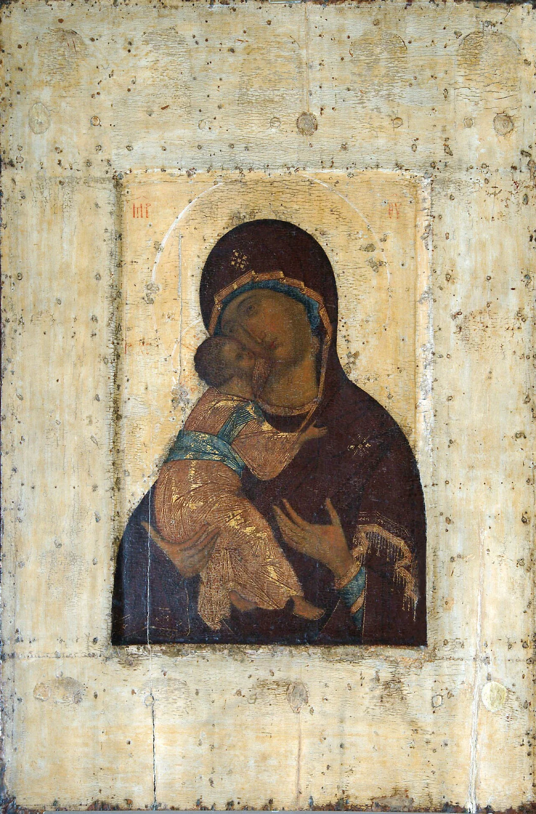
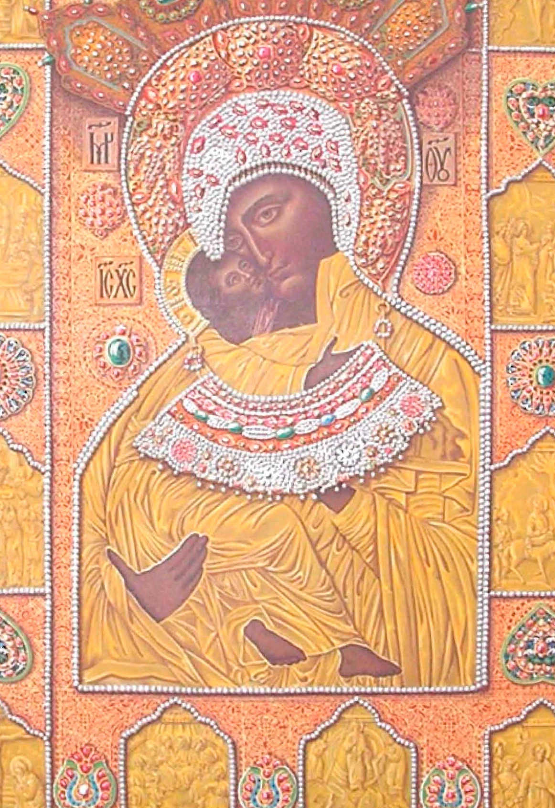
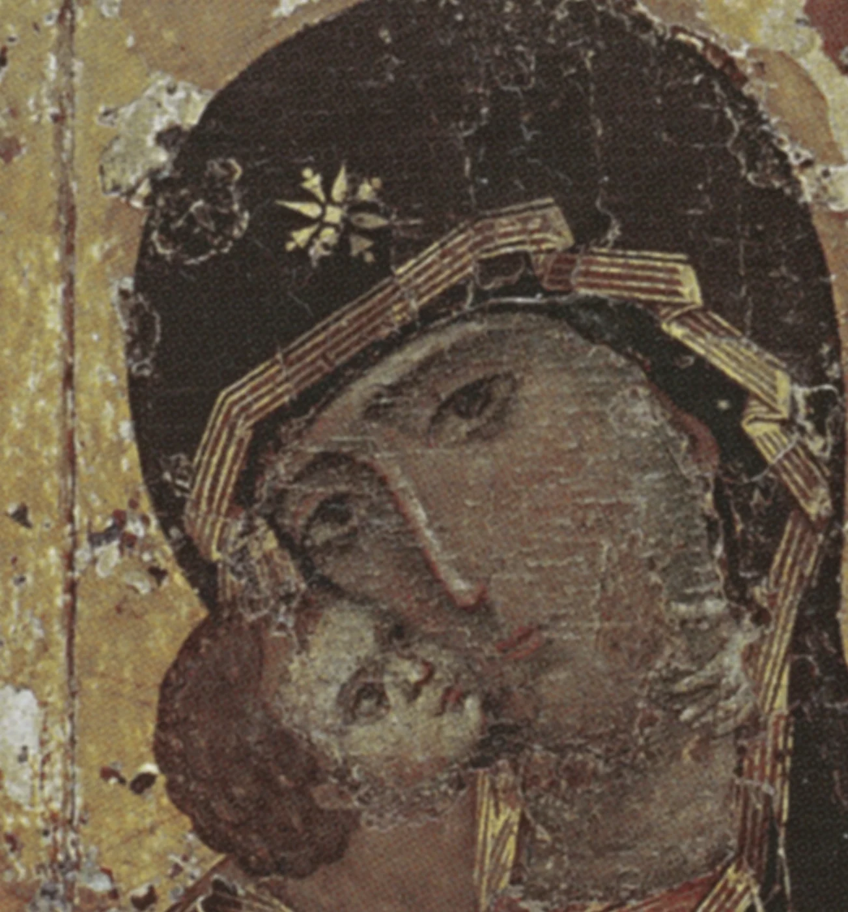
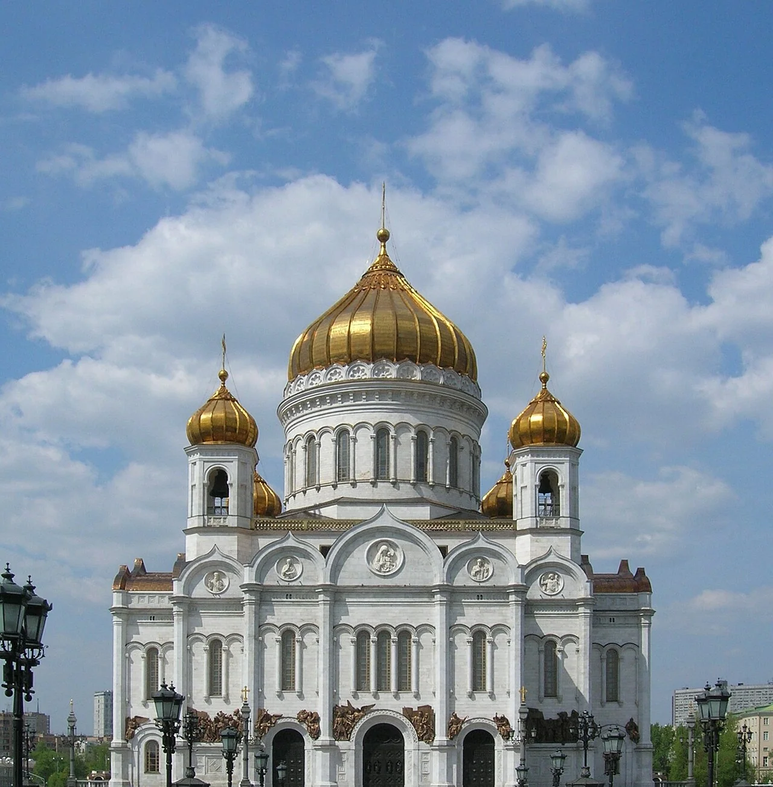

아직 펼치지 않은 카드성모와 아기 · 2블라디미르의 성모엄마와 아기는 어디를 맞대고 있을까요?엄마와 아기가 어디를 맞대고 있을까?
12세기 앞부분 · 1918년콘스탄티노폴리스에서 키이우·블라디미르를 지나 모스크바로
블라디미르의 성모
엄마와 아기가 뺨을 맞댄 이콘이에요. 이 이콘은 오랫동안 금빛 덮개를 쓰고 있었고, 덮개 아래의 물감은 여러 번 다시 칠해졌어요. 1850년 무렵에 옮겨 그린 덮개 쓴 이콘과 오늘의 이콘을 손잡이로 겹쳐, 덮개 아래를 열어 보세요.
엄마랑 아기가 뺨을 꼭 맞댄 그림이야. 옛날엔 금빛 옷을 입고 있었대. 손잡이로 그 옷을 걷어 볼까?
검수 전 시안이에요(기준서 2판). 장면에는 기록에 있는 것만 옮겼고, 전해지는 이야기와 학자마다 다른 이야기는 그렇다고 밝혔어요. 상상은 ‘눈 감고 상상해 보기’에만 썼어요.
시안 확인용카드 단계 미리 보기
1
뺨과 뺨
아기가 엄마의 뺨에 제 뺨을 꼭 대고, 한 팔로 엄마의 목을 감싸 안았어요. 엄마는 아기를 안은 채 우리 쪽을 바라봐요.
이콘은 정교회 그리스도인들이 기도하며 바라보는 그림이에요. 이 이콘은 12세기 앞부분 콘스탄티노폴리스(지금의 튀르키예 이스탄불)에서 그려진 것으로 보여요. 1130년 무렵 키이우의 므스티슬라프 공에게 선물로 왔고, 공은 키이우 가까운 비시호로드의 교회에 이콘을 두었어요.
엄마가 입은 짙은 겉옷에는 머리와 어깨에 금빛 별이 있어요. 이 다정한 두 얼굴이 이 카드가 끝까지 따라갈 곳이에요.
아기가 엄마 목을 꼭 끌어안고 뺨을 댔어.
물어보기아기는 엄마한테 무슨 말을 하고 있을까?
2
블라디미르로 간 이콘
1155년, 안드레이 공은 아버지의 허락 없이 비시호로드를 떠나 북동쪽 수즈달 땅으로 갔어요. 이때 이 이콘을 함께 가져갔다고 옛 연대기(이파티예프 연대기)가 그해 일로 적었어요.
안드레이는 새 도시 블라디미르에 성모 안식 대성당을 지어 1160년에 봉헌했어요. 또 다른 연대기는 그가 이콘에 금 서른 그리브나(옛 무게 단위)가 넘게 들인 덮개를 씌우고, 은과 보석과 진주로 꾸몄다고 적었어요. 이 도시의 이름을 따 ‘블라디미르의 성모’라고 불러요.

이콘을 싣고 가던 말이 블라디미르를 지나 멈춰 서더니 움직이지 않았고, 성모가 나타나 이콘을 블라디미르에 두라고 했다는 이야기도 전해요. 그 자리가 보골류보보 마을이에요.
왕자님이 이콘을 싣고 먼 북쪽 도시로 갔어. 그리고 금빛 옷을 입혔대.
물어보기이콘을 싣고 가던 말이 멈춰 섰대. 왜 그랬을까?
3
들판의 만남(전해지는 이야기)
옛 이야기 「테미르 악사크 이야기」는 1395년의 일을 이렇게 전해요. 티무르의 군대가 남쪽에서 다가오자, 모스크바의 바실리 대공이 이콘을 모셔 오게 했어요.
8월 15일 블라디미르 대성당을 떠난 이콘을, 8월 26일 모스크바 가까운 들판에서 키프리안 수도대주교(모스크바 교회의 으뜸 성직자)와 성직자들, 여러 공과 백성이 맞이했어요. 같은 날 티무르는 군대를 돌려 떠났다고 해요.


이 일을 처음 적은 글이 언제 쓰였는지, 정말 그렇게 일어났는지는 학자마다 의견이 달라요. 8월 26일을 ‘만남(스레테니예)’의 날로 지킨 흔적은 1480년대부터 보여요.
왼쪽은 17세기 화가가 그 만남을 그린 이콘이에요. 오른쪽은 블라디미르 성모 안식 대성당에 남아 있던 복사본이에요. 1395년부터 1410년대 사이에 원작과 같은 크기로 그렸고, 여러 학자가 안드레이 루블료프의 그림으로 봐요.
사람들이 성문 밖 들판까지 나와서 이콘을 맞이했대.
물어보기그림 속 사람들은 어떤 얼굴로 기다리고 있어?
4
금빛 덮개를 걷으면
1846~1853년에 나온 책 『러시아 나라의 옛것』에서 화가 표도르 솔른체프가 이 이콘을 옮겨 그렸어요. 진주와 보석이 박힌 금빛 덮개가 이콘을 감싸고, 두 얼굴과 손만 드러나 있어요.
1918~1919년, 복원가들이 덮개를 벗기고 오랜 그을음과 나중에 덧칠한 물감을 걷어 냈어요. 손잡이를 밀어 그 덮개를 걷어 보세요.
가운데 손잡이를 밀어, 1850년 무렵 금빛 덮개를 쓴 이콘과 덮개를 벗긴 오늘의 이콘을 겹쳐 보세요.

왼쪽 · 솔른체프가 옮겨 그린 금빛 덮개의 이콘, 1846~1853년 · 그림: 표도르 솔른체프, 『러시아 나라의 옛것』 1권 · 퍼블릭 도메인 · 위키미디어 공용
오른쪽 · 「블라디미르의 성모」, 12세기 앞부분 · 작자 미상(12세기) · 퍼블릭 도메인 · 위키미디어 공용
왼쪽은 사진이 아니라 화가가 옮겨 그린 그림이라, 두 얼굴의 자리가 꼭 맞지는 않아요. 금빛 덮개는 두 얼굴과 손만 내놓고 나머지를 모두 가렸어요.
덮개 아래의 물감은 13세기에 처음 다시 칠해진 뒤 19세기 끝까지 여러 번 덧칠되었어요. 1918년의 복원가들은 나중의 물감과 니스를 모두 걷지 않고 일부만 걷어 냈어요.
처음 12세기의 물감이 남은 곳은 두 얼굴, 옷의 몇 군데, 손과 바탕이에요. 덮개가 비워 두었던 두 얼굴에 처음 모습이 가장 많이 남았어요.
1918년의 복원가라면, 나중에 덧칠한 물감을 어디까지 걷어 낼까요?
손잡이를 밀어 봐. 금빛 옷 아래에 무엇이 있을까?
물어보기금빛 옷을 걷으니까, 무엇이 그대로 남아 있어?
5
처음 그대로, 두 얼굴
덧칠을 걷어 내자, 12세기에 그린 두 얼굴이 다시 드러났어요. 900년 가까이 지나는 동안 옷과 바탕은 여러 번 다시 칠해졌어요.
아기의 뺨이 엄마의 뺨에 닿은 그곳. 처음 그린 모습이 가장 많이 남은 곳은, 바로 맞댄 두 얼굴이었어요.

엄마랑 아기 얼굴은 900년 전에 그린 그대로래!
물어보기두 얼굴을 보면 어떤 마음이 들어?
눈 감고 상상해 보기
차가운 작업실의 탁자 위에 덮개를 벗긴 나무판이 놓여 있어요. 짙은 갈색으로 어두워진 겉칠을 조심스레 한 겹씩 걷어 낼 때마다, 아기의 뺨과 엄마의 뺨이 조금씩 밝아져요. 아무도 말을 하지 않아요.
눈을 감아 봐. 금빛 옷을 살살 벗기고, 까만 먼지를 조금씩 닦아 내. 그러면 엄마랑 아기 얼굴이 환해져.
나의 자리
오래 덮이고 다시 칠해져도 끝까지 남은 것은 맞댄 두 얼굴이었어요. 내게서 끝까지 남았으면 하는 다정함은 무엇인가요?
엄마나 아빠 뺨에 내 뺨을 대 볼까? 어떤 느낌이야?
마음에 닿는 한 줄을 고르거나 직접 써 보세요. 한 줄을 남기면 이 자리의 도장이 찍혀요. 이 기기에만 저장돼요.
더 깊이
궁금한 칸만 펼쳐 읽어도 괜찮아요.
알고 보면
덮개(리자) 이콘 위에 씌우는 금속 덮개예요. 연대기는 1150년대에 안드레이 공이 금과 은, 보석과 진주로 이 이콘의 덮개를 처음 만들었다고 적었어요. 솔른체프가 그린 덮개도 얼굴과 손만 비워 두었어요.
덮이지 않은 얼굴 덮개와 불 때문에 옷과 바탕은 여러 번 상하고 다시 칠해졌어요. 금속에 덮이지 않았던 두 얼굴에 처음 모습이 남았다고 설명하는 자료도 있어요.
그라바르의 위원회 1918년, 이고리 그라바르가 옛 그림을 지키고 되살리는 위원회를 세웠어요. 그해 정교회의 티혼 총대주교도 ‘보호 문서’를 내어 이 일을 축복했어요.
블라디미르의 복사본 블라디미르 대성당에 남은 같은 크기 복사본도 1918년, 이 위원회의 블라디미르 조사단(그리고리 치리코프 등)이 덧칠을 걷어 냈어요. 1921년이나 1923년에 블라디미르 박물관으로 옮겨졌어요.
기록마다 다른 점
1395년의 일 「테미르 악사크 이야기」는 이콘이 그해 모스크바를 지켰다고 전해요. 그런데 이 일을 그해에 적은 연대기는 없고, 이야기가 쓰인 때를 14세기 끝부터 15세기 뒤쪽까지 학자마다 다르게 봐요. 이콘이 1395년에 모스크바로 왔는지 의심하는 학자도 있어요.
만남의 자리 정교회는 사람들이 이콘을 맞은 곳을 쿠치코보 들판이라고 전하고, 그 자리에 ‘만남’ 수도원(스레텐스키 수도원)을 세웠다고 해요. 「테미르 악사크 이야기」는 모스크바 가까운 ‘들판’이라고 적었어요.
톨마치 교회 트레티야코프 미술관 곁 톨마치의 성 니콜라스 교회에 이 이콘을 둔 해를 1996년으로 적은 자료도, 1999년으로 적은 자료도 있어요.
말씀과 함께 읽기
그리스도인들은 엄마와 아기의 다정한 그림을 성탄 이야기와 함께 읽어 왔어요. 말씀은 뜻만 옮기고, 본문은 대한성서공회 개역개정으로 이어 드려요.
누가복음 2장 19절 목자들이 전한 말을 마리아가 모두 마음에 간직하고 곰곰이 생각했다는 말씀이에요.
직접 가 보기

확인한 날 · 2026년 11월 18일 · 바뀌기 쉬운 정보라 정기적으로 다시 확인해요
2026년 4월 3일, 이 이콘은 트레티야코프 미술관에서 모스크바 그리스도 구세주 대성당으로 옮겨졌어요. 이콘은 미술관의 것으로 남고, 교회가 49년 동안 쓰기로 했어요.
미술관 전문가들이 정해진 때마다 상태를 살피고, 알맞은 온도와 습도를 지키는 진열장에 두어요. 대성당의 관람 방법은 바뀔 수 있어서, 가기 전에 다시 확인해 주세요.
덮개 걷어 보기 금박
‘금빛 덮개를 걷으면’에서 손잡이를 양쪽 끝까지 밀면 카드에 금박이 입혀져요.
손잡이를 끝까지 밀어 덮개 쓴 이콘과 오늘의 이콘을 다 보기
복원가의 자리에서 채색
둘 가운데 하나만 해도 카드가 채색돼요.
1918년 복원가라면 덧칠을 어디까지 걷어 낼지 고르기
아이와 함께 ‘영화처럼 보기’를 끝까지 보기
근거 보기 (11)
- OrthoChristian, 2026.4.3: 블라디미르·돈스코이 이콘을 교회에 넘김 — 1130년 무렵 므스티슬라프 공에게 선물, 비시호로드, 블라디미르 대성당, 15세기 모스크바, 1918~1919년 그을음과 덧칠을 걷어 냄, 49년, 미술관 소유, 진열장
- OrthoChristian: The Palladium of the Russian Land — 이파티예프 연대기 1155년, 블라디미르 대성당 1160년 봉헌, 라우렌티우스 연대기의 금 서른 그리브나 덮개, 보골류보보 이야기
- Л. А. Щенникова, 「Сретение Владимирской иконы Богоматери в Москве в 1395 г.」(2018) — 「테미르 악사크 이야기」의 8월 15일·26일, 키프리안 수도대주교와 백성, 학자들의 의견, 1480년대의 축일, 글리니시 교회에서 온 17세기 이콘(트레티야코프)
- culture.ru: Что скрывают произведения искусства — 12세기 물감이 남은 곳(얼굴·옷 일부·손·바탕), 13세기부터 19세기 끝까지의 덧칠, 1918년 일부만 걷어 냄
- 트레티야코프 미술관 잡지: Grabar’s Workshops — 1918년 위원회, 티혼 총대주교의 보호 문서, 블라디미르 이콘을 나중 덧칠에서 걷어 냄
- OrthoChristian: Commemoration of the Vladimir Icon … — 쿠치코보 들판, 8월 26일, 만남 수도원
- Art of the Middle Ages(교재 자료): The Virgin of Vladimir — 금속 덮개에 덮이지 않은 두 얼굴, 1918년 조사
- 위키미디어 공용: 솔른체프, 「블라디미르의 성모 기적의 이콘」, 『러시아 나라의 옛것』 1권(1846~1853)
- 위키미디어 공용: 블라디미르의 복사본 정보 — 1395~1410년대, 101×69cm, 블라디미르 성모 안식 대성당에서 옴, 1918년 그라바르 위원회 조사단(치리코프 등)이 걷어 냄, 루블료프로 보는 학자들
- 위키미디어 공용: 「블라디미르 이콘의 만남」 정보 — 17세기 중엽~후반, 128×99cm, 글리니시의 알렉시 수도대주교 교회에서 옴(트레티야코프 미술관)
- Wikipedia: Virgin of Vladimir — 길잡이(톨마치 교회, 1395년 이야기에 대한 학자들의 의견)
그림·사진·소리 출처
- 작자 미상(12세기) · 퍼블릭 도메인 · 위키미디어 공용
- 그림: 표도르 솔른체프, 『러시아 나라의 옛것』 1권 · 퍼블릭 도메인 · 위키미디어 공용
- 사진: Vsatinet · CC BY-SA 4.0 · 위키미디어 공용
- 사진: Jorge Láscar · CC BY 2.0 · 위키미디어 공용
- 사진: shakko · CC BY-SA 3.0 · 위키미디어 공용(트레티야코프 미술관 소장품)
- 그림: 안드레이 루블료프로 여겨짐 · 퍼블릭 도메인 · 위키미디어 공용(블라디미르·수즈달 박물관 소장품)
- 사진: Voytek S · CC BY-SA 2.5 · 위키미디어 공용
- 작자 미상(12세기) · 퍼블릭 도메인 · 위키미디어 공용
‘처음 만나는 기독교 문화’의 깊은 카드예요. 실제 인물의 사진은 쓰지 않았어요. 카드 단계와 남긴 글은 이 기기에만 저장돼요.